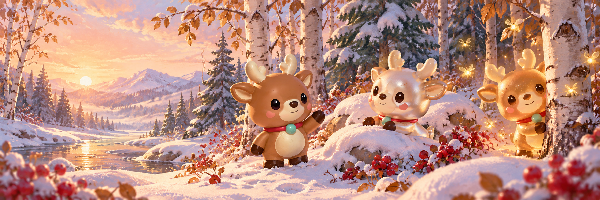
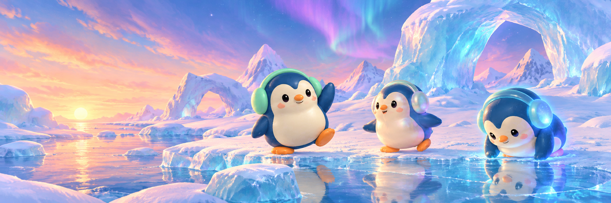
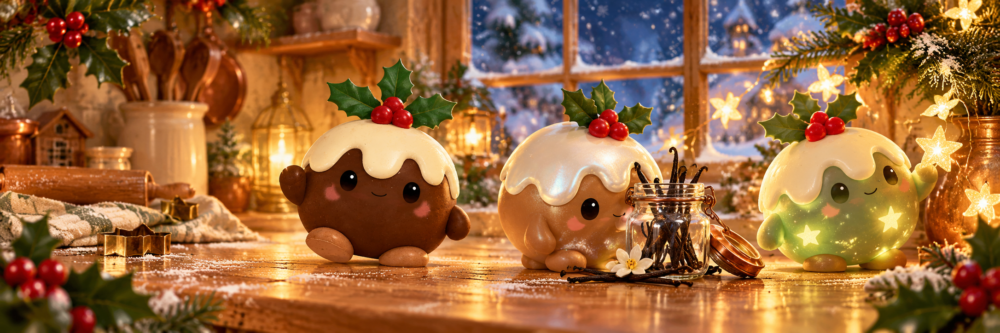

POCKLE · WINTER COLLECTION ARTThree new worlds to collect
Each collection has ten playable finishes, one rare glow, five environments, a panoramic cover and a real opening surprise box. Select an environment to see the actual Unity toy and reflections in that scene.
Reiny

3:1 cover · artwork only, no text overlaysFive environments
Guin

3:1 cover · artwork only, no text overlaysFive environments
Bundy

3:1 cover · artwork only, no text overlaysFive environments
World paintings and cover illustrations use built-in imagegen. Product PNGs are rendered from the same hinged 3D cartons used in Unity. Reflections are baked from the world paintings; motion and tactile play stay local.
Exact image prompts and generation provenance · Character materials and reactions